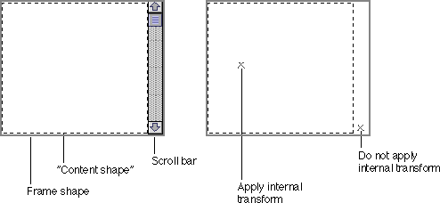

Display-Related Events
Your part editor needs to respond to events that select or change the position or visibility of your intrinsic content, by highlighting or preparing to move or redraw the content. This section discusses general event-handling issues related to drawing and highlighting. Display concepts are described more completely in Chapter 4, "Drawing."Just as with intrinsic content, your part editor is responsible for knowing what embedded frames look like and when they become visible or invisible. When update events or events related to scrolling or editing cause an embedded frame to become visible, your part is responsible for creating facets for those frames. If events cause an embedded facet to move, your part must modify the facet's external transform to reflect the move. If the embedded facet moves so as to become no longer visible, your part is responsible for deleting the embedded facet from its containing facet (or marking it as purgeable).
Hit-Testing
Hit-testing is the interpretation of mouse events in terms of content elements within a frame. For example, when the user clicks somewhere within your part's content area to select an item or to set an insertion point, you must use the click location to decide which item has been selected or which characters correspond to the insertion point. You can then highlight the proper item or draw the text caret at the proper location.Coordinate conversion is necessary to assign content locations to hit-testing events, and in that sense hit-testing is the inverse of drawing. Coordinate conversion and the application of transforms during drawing are discussed in the section "Transforms and Coordinate Spaces".
If the user clicks in a facet of your part's frame, OpenDoc applies the inverse of all external transforms from the root facet to your facet, passing you the mouse event in your part's frame coordinates. It is then your responsibility to apply the inverse of your own internal transform to the event location, to convert it to the content coordinates of your part.
If the entire content of your part's frame is scrolled, the application of your frame's internal transform yields the correct location for everything within the frame. If, however, your part has drawn scroll bars or other nonscrolling items within the frame, it is important not to apply the internal transform to events over those items. See "Scrolling"
Invalidating and Updating
On the Mac OS platform, when keystroke or mouse events involved with editing have changed the visible content of your part, you should invalidate the affected areas (by calling your frame'sInvalidatemethod), so that an update event will be generated to force a redraw. If the same presentation of your part is displayed in more than one frame (see "Synchronizing Display Frames"), you are responsible for invalidating those frames as well, if necessary.Sometimes a portion of a window needs to be redrawn because it has been invalidated by actions taken by the documents' parts or by the system (as when a window is uncovered). In this case, the document shell receives notification of that fact and passes an update event to the dispatcher, which calls the
Updatemethod of the window. The window in turn calls theUpdatemethod of its root facet.The root facet's
Updatemethod examines all of the root facet's embedded facets (and their embedded facets, and so on) and marks each one that intersects the area that must be updated. Then, each facet that needs to be redrawn calls theDrawmethod of its frame's part, passing it the appropriate shape that represents its portion of the area to be updated.Your part can, if desired, modify the order in which embedded parts draw their content, by making explicit calls to the
Draw,DrawChildren, andDrawChildrenAlwaysmethods of an embedded facet. See "The Draw Method of Your Part Editor"Scrolling
The scrolled position of a part's contents within a frame is controlled by the frame's internal transform. (The transform object can also support scaling, translation, rotation, and perspective transformations of a frame's contents. See, for example, Figure 4-2.)In general, the user specifies the amount of scrolling to apply to a frame. The part editor then modifies the offset specified in the frame's internal transform. (Depending on the new scrolled position of the part's contents, the part editor may also have to add or remove facets for embedded frames that have become visible or obscured by the scrolling.)
There are a number of ways for your part editor to support scrolling:
Each of these methods requires different event handling by your part to achieve the same result: a modified internal transform for the frame. Your part then draws the scrolled display as described in the section "Scrolling Your Part in a Frame".
- It can create scroll bars for its content, placing them at the margins of its display frames.
- It can create scroll bars, sliders, or other kinds of controls and place them outside of its frame, as separate frames, or as elements in a floating window.
- It can support autoscrolling, by tracking the mouse pointer when the user moves it beyond your part's frame while holding down the mouse button.
- It can support the standard user-interface method for positioning a part in a frame, using the Show Frame Outline command and Reposition Content in Window command. Both commands are described in the section "Repositioning Content in a Frame".
Event Handling in Scroll Bars Within Your Frame
You can create scroll bars for your content inside the margins of your frame. One approach to handling events in those scroll bars is to create an extra, private "content shape" within your frame, as described for drawing in the section "Placing Scroll Bars Within Your Frame". The content shape is the same as the frame shape, except that it does not include the areas of the scroll bars.When interpreting mouse events in your frame, you must take the current scrolled position of your content into account for content editing, but not for scroll-bar manipulation. Thus, for points within your content shape you apply the inverse of the frame's internal transform to mouse events, whereas outside the content shape (in the scroll bar area) you do not. See Figure 5-2.
Figure 5-2 Using a "content shape" within a frame shape to handle events

Mouse events within the scroll bar area specify how to set the frame's internal transform; based on the transform's new value, you then redraw your part's content (and the scroll bar slider). Mouse events within the area of the content shape specify how to select or edit the appropriately scrolled content.Event Handling in Scroll Bars in Separate Frames
If you place scroll bars or adornments in frames that are separate from your display frame (see "Placing Scroll Bars in a Separate Frame"), you avoid having to define a separate content shape. Your part has one display frame that encloses both the scroll bars and the content; you draw the scroll bars directly in this frame, and you draw the content in a subframe. Only the subframe's internal transform changes.When a mouse event occurs in the nonscrolling frame, your part interprets it and sets the internal transform of the scrolling subframe accordingly.
Mouse-Down Tracking and Selection
A selection exists only in the context of a particular part. The boundary of a selection cannot span part boundaries; all of its margins must be in the same part. However, a selection can include any number of embedded frames (which themselves can include any number of more deeply embedded frames).Selections are typically created through mouse events, or keyboard-modified mouse events, within an already active frame or a frame that has been made potentially active by an initial mouse-down event within its area. When a mouse-down event occurs, OpenDoc passes the pointer location, in the frame coordinates of the most deeply embedded frame enclosing the event location, to the part displayed in that frame. If a drag-selection occurs (that is, if a drag-and-drop operation does not occur), the subsequent mouse-up event location is passed in the same coordinates to the same part. Thus, the active frame is not changed simply because the cursor passes across a frame boundary while the user is making a selection.
The selection actions your part takes during mouse-down tracking depend on your content model. Specific user-interface conventions for providing selection facilities and highlighting selections are discussed in the section "Selection" of this book and in Macintosh Human Interface Guidelines. You should provide feedback to the user while the dragging is in progress.
Your part editor should support extending selections through Shift-clicking and Command-clicking, following the guidelines described in the sections "Extending a Selection" and "Making a Discontiguous Selection" on page 571. Because selection is possible only within one part at a time, a part editor can extend a selection outside of its display frame boundary only to items within another of its own display frames.
If your part is a containing part and allows the user to drag selected content, including embedded frames, dragging may lead to frame negotiation. If an embedded frame is clipped by the edge of a page, for example, you may need to change its size.
Selected frames should be highlighted appropriately, as described in the section "Drawing Selections"
Mouse-Up Tracking
OpenDoc calls your part'sHandleEventmethod whenever the mouse pointer enters, moves within, or leaves a facet of a display frame of your part and the mouse button is up (not pressed). Your part can use this method call to display a custom cursor while the pointer is within your part's frames.Your
HandleEventmethod is passed an event of typekODEvtMouseEnterwhen the pointer enters your part's facet, allowing you to swap the pointer for a cursor specific to your application, if desired. When it receives akODEvtMouseLeaveevent, however, yourHandleEventmethod can perform whatever actions it deems appropriate, but it need not restore the cursor to the appearance it had before thekODEvtMouseEnterevent occurred. OpenDoc will restore the default cursor.Your
HandleEventmethod is passed an event of typekODEvtMouseWithinonly when the cursor changes position within your facet. More specifically, on the Mac OS platform the method is called only when the cursor moves out of the current mouse region, an area (by default a size of 1 pixel square) that you can set by calling the dispatcher'sSetMouseRegionmethod. If, for example, you need a special cursor for a facet but do not need the cursor to change shape anywhere within the facet, you can make the mouse region equal to the intersection of the facet's active shape and clip shape. In this case, you receive thekODEvtMouseEnterandkODEvtMouseLeaveevents when the cursor moves into and out of that facet, but not thekODEvtMouseWithinevent when the cursor moves within the facet.If you do set the mouse region, the first
kODEvtMouseEnter,kODEvtMouseLeave, orkODEvtMouseWithinevent that you receive resets the mouse region to its default size. You need to recalculate this region and callSetMouseRegionagain if you still need a nondefault mouse region. (You can invalidate the current mouse region and cause it to revert to the default at any time by calling the dispatcher'sInvalidateFacetUnderMousemethod.)Your part is responsible for providing the appropriate cursor appearances as defined by OpenDoc. Table 12-1 shows the standard cursors and describes the situations in which they should be employed. For example, if your part is the containing part of the currently active part, your handler for
kODEvtMouseWithinevents should change the cursor to a hand when it is over the active border.Mouse-Up Feedback While Drawing
In certain modal situations, such as when drawing polygons or connected line segments, the user typically draws by clicking the mouse button once for each successive vertex or joint. (The user might complete the polygon and exit the mode by double-clicking or by clicking in the menu bar or another window.) During the drawing operation, while the mouse button is up, the part editor must provide feedback to the user, showing a potential line segment extending from the last vertex to the current mouse position.Your part can support this kind of drawing feedback by requesting the mouse focus (
kODMouseFocus) when the user clicks to make the first vertex after selecting the appropriate drawing mode (perhaps from a tool palette that you maintain). Your part then receiveskODEvtMouseWithinevents when the mouse moves, regardless of which facet the cursor travels over. The facet passed to yourHandleEventmethod is the one in which the initial mouse-down event occurred. Receiving these events allows you to provide visual feedback regardless of where the user moves the mouse pointer.Your part also receives all mouse-down and mouse-up events until it relinquishes the focus. In addition, as long as your part holds the mouse focus, OpenDoc sends no
kODEvtMouseEnterandkODEvtMouseLeaveevents to any facet.When the user completes the drawing operation, relinquish the mouse focus.
If the user clicks on the desktop or on another document's window, your part receives a suspend event and should exit the mode (relinquish the mouse focus). Also, if the user clicks in the menu bar, you must relinquish the mouse focus and redispatch the event if you want the menu to appear.